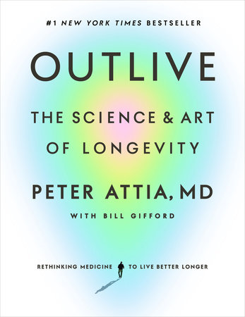

(Audio) Outlive, by Attia
Sunday January 28, 2024
I was already thinking about improving my health, then my last grandparent died, and this book was recommended in Spotify and by a friend. It was gratifying to listen to while running because Attia kept saying how good exercise is.
He's a little bit of a tech bro. He talks about how he mellowed and started taking one (1) day off per week. And is he responsible for the popularity of rucking? He used to be very into keto and fasting. He still seems to be a little quick to assume causation. But still: Who doesn't want more healthspan?
- Recommendations
- Exercise
- "Zone 2" sustained cardio
- Intense cardio for improving VO2-max
- Strength (with weights)
- Stability (core, posture, flexitility...)
- Diet
- Get lots of tests done, screen early for cancer, etc.
- Sleep (lots of good)
- Emotional health (good)
- Rapamycin taken once a week
- You can get this from AgeLessRx or HealthSpan, for example.
- Exercise
- Anchor phrases
- Medicine 3.0: Where 1.0 was witchcraft/superstition, 2.0 is scientific "treat the disease" modern medicine, and 3.0 is his style of life-long health improvement to avoid diseases of aging etc. (Attia's practice is called "Early.")
- The Four Horsemen
- Heart disease, stroke, etc.
- Cancer
- Dementia etc.
- Diabetes and friends ("metabolic disfunction") which he says is related to the other three
- The Centenarian Decathlon: Work toward being able to do things when you're really old; overprepare because you will age.
Oh also he talks a little bit about Mendelian randomization, which it turns out is just using genetics as an instrumental variable. Also Bradford Hill criteria for causation. Neat!
